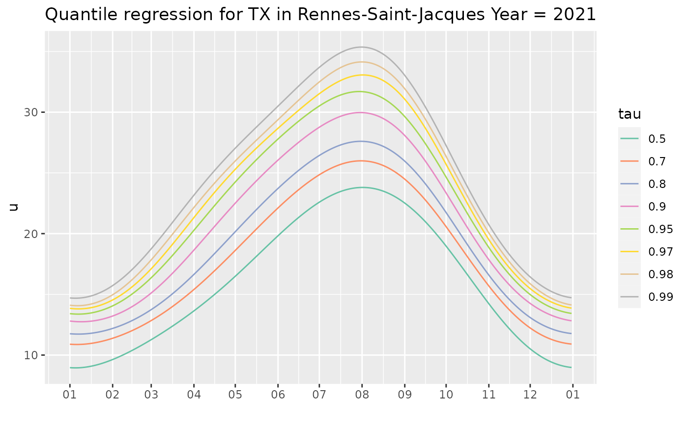
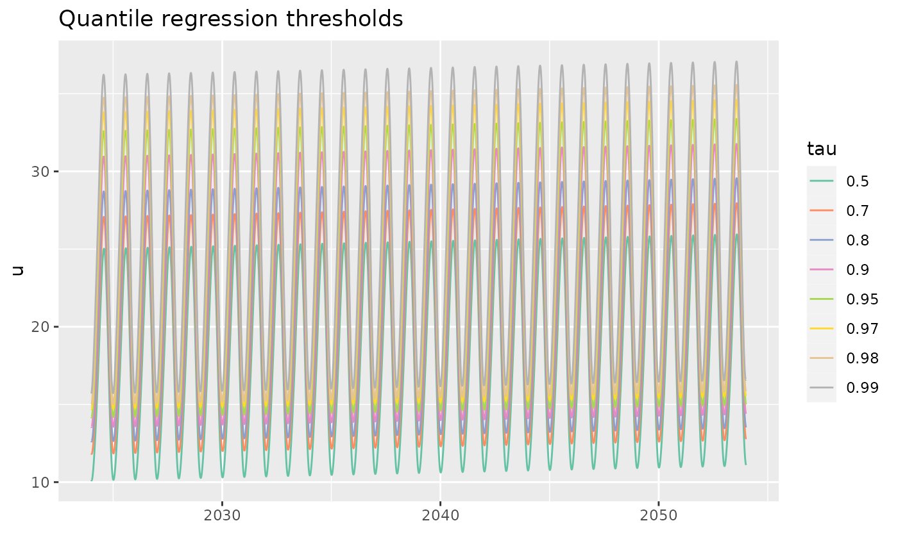

Create A rqTList Object by Repeated Calls to
rq
rqTList.RdCreate a qrList object by calling rq for each
of the probabilities given in tau, using the same formula
and data for all fits.
Arguments
- formula
The formula that will be used in
rq.- dailyMet
An object with class
"dailyMet"that contains the variables that will be used in the formula or in the design function specifieddesign.- tau
A vector of probabilities.
- design
A list to be passed to the
designVarsfunction. Each element of this list is itself a named list with an elementwhatdescribing the "design function" to call, and an argumentargsdescribing the arguments to be passed to the design function, except its first argument. For each element of thedesignlist, a design matrixXis obtained by usingdo.calland the columns ofXare added to the data frame given indailyMetbefore fiiting the model. The default creates seven trigonometric basis functions for the first three harmonics of the yearly seasonality.- trace
Integer level of verbosity.
Details
When extradesign is used, any design function used should
fulfill the following requirements.
The first argument must be the date. The name of this argument will not be used in the call.
The returned value should be an object inheriting from the
"matrix"class with suitable column names. It can also be a list containing the design matrix as its element named"X".
The call to a design function should mention Date as the
first argument. This call refers to the dailyMet object
used, from which the Date column will be used.
Examples
Rq <- rqTList(dailyMet = Rennes)
coef(Rq)
#> Cst cosj1 sinj1 cosj2 sinj2 cosj3
#> tau=0.50 16.06393 -6.799077 -2.591552 -0.25845982 0.8639527 -0.03092440
#> tau=0.70 17.95239 -7.088085 -2.512324 -0.05437666 0.8490012 0.09359081
#> tau=0.80 19.16725 -7.533421 -2.492802 -0.04192276 0.8351121 0.17707189
#> tau=0.90 20.91793 -8.261868 -2.391511 -0.10477575 0.8021272 0.26742011
#> tau=0.95 22.24216 -8.813697 -2.265968 -0.24878473 0.8232536 0.24753280
#> tau=0.97 23.12972 -9.185094 -2.350450 -0.41137561 0.9621417 0.32897144
#> tau=0.98 23.81042 -9.465539 -2.349878 -0.47458855 1.0689253 0.25157101
#> tau=0.99 24.73573 -9.763231 -2.296899 -0.50022134 1.1528784 0.24505818
#> sinj3
#> tau=0.50 0.06418181
#> tau=0.70 0.06247610
#> tau=0.80 0.04022597
#> tau=0.90 -0.05661638
#> tau=0.95 -0.09498655
#> tau=0.97 -0.17853494
#> tau=0.98 -0.26641707
#> tau=0.99 -0.27323854
autoplot(Rq)

if (require("NSGEV")) {
Rq1 <-
rqTList(formula = TX ~ Cst + cosj1 + sinj1 + cosj2 + sinj2 + t1_1970 - 1,
dailyMet = Rennes,
design = list("trigo" = list(what = "tsDesign",
args = list(type = "trigo", df = 7)),
"breaks"= list(what = "NSGEV::breaksX",
args = list(breaks = c('1970-01-01', '1990-01-01')))))
p1 <- predict(Rq1,
newdata = data.frame(Date = seq(from = as.Date("2024-01-01"),
to = as.Date("2054-01-01"),
by = "day")))
autoplot(p1)
}
